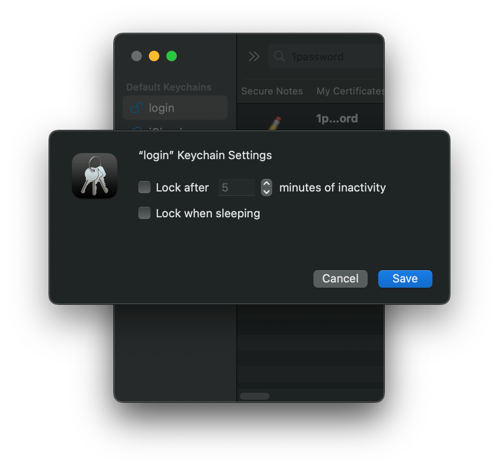

Automated backup¶
Preface¶
This backup solution may appear to be a Rube Goldberg machine, and perhaps it is, but it works well
for me and my family. I manage it headlessly over SSH (see tar over SSH). Thanks to
fdautil I can modify things without needing to authorize Full Disk
Access via the System Settings GUI.
Recently I've also begun backing up my Ubuntu VPS with this approach as well.
Also, if restic is good enough for CERN, it's good enough for me!
Sequence diagram¶
macOS¶
sequenceDiagram
participant KC as macOS "login" keychain
participant 1P as 1Password Connect
participant LD as launchd
participant ER as exec-resticprofile
participant RP as resticprofile
participant RE as restic
participant RC as rclone
participant PC as pCloud
participant HC as Healthchecks.io
LD ->> ER: Execute
ER ->> KC: Request 1Password Connect token
KC ->> ER: Receive 1Password Connect token
ER ->> RP: Execute w/ 1P Connect token in env
RP ->> 1P: Request healthcheck endpoint UUID
1P ->> RP: Receive healthcheck endpoint UUID
RP ->> HC: Ping healthcheck endpoint
RP ->> RE: Execute
RE ->> 1P: Request restic repo password
1P ->> RE: Receive restic repo password
RE ->> RC: Start HTTP server
RC ->> 1P: Request rclone config password
1P ->> RC: Receive rclone config password
RC ->> RE: HTTP connection established
loop Data transfer: backup, forget old snapshots
RE ->> RC: HTTP
RC ->> PC: HTTPS
PC ->> RC: HTTPS
RC ->> RE: HTTP
end
RE ->> RP: Return status
RP ->> 1P: Request healthcheck endpoint UUID
1P ->> RP: Receive healthcheck endpoint UUID
RP ->> HC: Ping healthcheck endpoint w/ status and log file
The diagram may also be viewed with interactive controls here.
Note
We can assume the default "login" keychain is unlocked because
-
the launchd service is running in the logged-in user's launchd GUI domain, and
-
the "login" keychain automatically unlocks upon login and has been configured to remain unlocked while logged in.
This allows the 1Password Connect token to be loaded from the "login" keychain with no user interaction required.

Ubuntu (VPS)¶
sequenceDiagram
participant FS as Local filesystem
participant 1P as 1Password
participant SD as systemd
participant ER as exec-resticprofile
participant RP as resticprofile
participant RE as restic
participant RC as rclone
participant PC as pCloud
participant HC as Healthchecks.io
SD ->> ER: Execute
ER ->> FS: Request 1Password service account token
FS ->> ER: Receive 1Password service account token
ER ->> RP: Execute w/ 1P svc acct token in env
RP ->> 1P: Request healthcheck endpoint UUID
1P ->> RP: Receive healthcheck endpoint UUID
RP ->> HC: Ping healthcheck endpoint
RP ->> RE: Execute
RE ->> 1P: Request restic repo password
1P ->> RE: Receive restic repo password
RE ->> RC: Start HTTP server
RC ->> 1P: Request rclone config password
1P ->> RC: Receive rclone config password
RC ->> RE: HTTP connection established
loop Data transfer: backup, forget old snapshots
RE ->> RC: HTTP
RC ->> PC: HTTPS
PC ->> RC: HTTPS
RC ->> RE: HTTP
end
RE ->> RP: Return status
RP ->> 1P: Request healthcheck endpoint UUID
1P ->> RP: Receive healthcheck endpoint UUID
RP ->> HC: Ping healthcheck endpoint w/ status and log file
The diagram may also be viewed with interactive controls here.
Examples¶
macOS / Ubuntu (VPS)¶
Google Drive¶
# Mount Google Drive locally (runs in foreground - interrupt when backup finished)
mnt-gdrive
# Start Google Drive backup and tail the backup log.
bk-gdrive
# Log current backup progress.
bkp
Configuration / support files¶
macOS¶
launchd¶
-
~/Library/LaunchAgents/com.manselmi.resticprofile.nidoking.backup.plist(triggered daily) -
~/Library/LaunchAgents/com.manselmi.resticprofile.gdrive.backup.plist(triggered manually) -
~/Library/LaunchAgents/com.manselmi.resticprofile.onedrive.backup.plist(triggered manually) -
~/Library/LaunchAgents/com.manselmi.op.connect.server.plist(run at load)
fdautil¶
resticprofile¶
Sudo¶
Rclone¶
1Password¶
Zsh¶
Ubuntu (VPS)¶
systemd¶
-
/etc/systemd/system/resticprofile-backup@.timer(triggered daily)
resticprofile¶
Rclone¶
1Password¶
Zsh¶
Components¶
restic¶
Project URL¶
Project description¶
Restic is a modern backup program that can back up your files:
-
from Linux, BSD, Mac and Windows
-
to many different storage types, including self-hosted and online services
-
easily, being a single executable that you can run without a server or complex setup
-
effectively, only transferring the parts that actually changed in the files you back up
-
securely, by careful use of cryptography in every part of the process
-
verifiably, enabling you to make sure that your files can be restored when needed
-
freely - restic is entirely free to use and completely open source
resticprofile¶
Project URL¶
Project description¶
Configuration profiles manager for restic backup
resticprofile is the missing link between a configuration file and restic backup. Creating a configuration file for restic has been discussed before, but seems to be a very low priority right now.
With resticprofile:
-
You no longer need to remember command parameters and environment variables
-
You can create multiple profiles inside one configuration file
-
A profile can inherit all the options from another profile
-
You can run the forget command before or after a backup (in a section called retention)
-
You can check a repository before or after a backup
-
You can create groups of profiles that will run sequentially
-
You can run shell commands before or after running a profile: useful if you need to mount and unmount your backup disk for example
-
You can run a shell command if an error occurred (at any time)
-
You can send a backup stream via stdin
-
You can start restic at a lower or higher priority (Priority Class in Windows, nice in all unixes) and/or ionice (only available on Linux)
-
It can check that you have enough memory before starting a backup. (I've had some backups that literally killed a server with swap disabled)
-
You can generate cryptographically secure random keys to use as a restic key file
-
You can easily schedule backups, retentions and checks (works for systemd, crond, launchd and windows task scheduler)
-
You can generate a simple status file to send to some monitoring software and make sure your backups are running fine
-
You can use a template syntax in your configuration file
-
You can generate scheduled tasks using crond
-
Get backup statistics in your status file
-
Automatically clear up stale locks
-
Export a prometheus file after a backup, or send the report to a push gateway automatically
-
Run shell commands in the background when non fatal errors are detected from restic
-
Send messages to HTTP hooks before, after a successful or failed job (backup, forget, check, prune, copy)
-
Automatically initialize the secondary repository using
copy-chunker-paramsflag -
Send resticprofile logs to a syslog server
-
Preventing your system from idle sleeping
-
See the help from both restic and resticprofile via the
helpcommand or-hflag -
Don't schedule a job when the system is running on battery
rclone¶
Please see rclone.
FUSE-T¶
Project URL¶
Project description¶
FUSE-T is a kext-less implementation of FUSE for macOS that uses NFS v4 local server instead of a kernel extension.
The main motivation for this project is to replace macfuse that implements its own kext to make fuse work. With each version of macOS it's getting harder and harder to load kernel extensions. Apple strongly discourages it and, for this reason, software distributions that include macfuse are very difficult to install.
Additionally, the macfuse kext is unstable, may cause frequent system crashes and kernel lock-ups. Given those limitations many software publishers are unable to use macfuse anymore.
FUSE-T doesn't make use of kernel extension, it implements its own userspace server that converts between FUSE protocol and NFS calls and let macOS mount NFS volume instead of a kernel filesystem.
Healthchecks.io¶
Project URL¶
Project description¶
Healthchecks.io is an online service for monitoring regularly running tasks such as cron jobs. It uses the Dead man's switch technique: the monitored system must "check in" with Healthchecks.io at regular, configurable time intervals. When Healthchecks.io detects a missed check-in, it sends out alerts.
1Password CLI¶
Project URL¶
Project description¶
1Password CLI allows you to securely provision secrets in development environments, use scripts to manage items and provision team members at scale, and authenticate with biometrics in the terminal.
1Password Connect¶
Project URL¶
Project description¶
1Password Connect servers are a type of Secrets Automation workflow that allows you to securely access your 1Password items and vaults in your company's apps and cloud infrastructure.
LaunchControl / fdautil¶
Project URL¶
Project description¶
LaunchControl is a fully-featured launchd GUI allowing you to create, manage and debug system- and user services on your Mac.
Full Disk Access¶
(This section is copied from the LaunchControl manual.)
With macOS Mojave Apple added yet another security measure. Applications requiring access to sensitive data need special permissions beyond Unix permissions and ACLs. This is accomplished by granting them Full Disk Access in the Security & Privacy System Preferences Panel. While this solution works well for applications it is flawed when it comes to scripts. To grant a script (be it Shell, Python, Perl, …) Full Disk Access you have grant Full Disk Access to the executing interpreter. This approach is flawed as it grants every script of this type Full Disk Access.
fdautil¶
LaunchControl provides a command line utility to avoid this situation. The utility is
called fdautil and can be installed via the LaunchControl preferences Utilities panel to
/usr/local/bin. When installing fdautil LaunchControl will ask you to add it to the list of
programs with Full Disk Access.
To grant a job Full Disk Access you’ll have to prefix the command line you’d like to execute
with /usr/local/bin/fdautil exec. If for example your original job performed the command
you change it to
LaunchControl requires admin privileges to add your script (including the specific options and arguments) to the fdautil configuration file.
Note: On macOS Ventura services which run with fdautil are displayed as "Robby Pahlig" in System Settings → General → Login Items → Allow in the Background. Apple chose to display the name of the signing entity of an executable instead of a more informative text.
How does it work?¶
fdautil stores the complete command you want to execute with Full Disk Access in the configuration
file /Library/Preferences/com.soma-zone.LaunchControl.fdautil.plist. This configuration file is
writable only by root. Only commands (including arguments/options) stored in this configuration
file are executed by fdautil, others are rejected. It uses execvp(3) to replace itself with the
command you’d like to run. LaunchControl does all the configuration for you. When you change the
Program/ProgramArguments key it is updating the fdautil configuration automatically.
What is gained?¶
You get the benefit of Apple’s new security feature and can use scripts with Full Disk Access.
launchd¶
Project URL¶
Project description¶
launchd is an init and operating system service management daemon created by Apple Inc. as part of macOS to replace its BSD-style init and SystemStarter.
systemd¶
Project URL¶
The systemd System and Service Manager
Project description¶
systemd is a suite of basic building blocks for a Linux system. It provides a system and service manager that runs as PID 1 and starts the rest of the system.
systemd provides aggressive parallelization capabilities, uses socket and D-Bus activation for starting services, offers on-demand starting of daemons, keeps track of processes using Linux control groups, maintains mount and automount points, and implements an elaborate transactional dependency-based service control logic. systemd supports SysV and LSB init scripts and works as a replacement for sysvinit.
Other parts include a logging daemon, utilities to control basic system configuration like the hostname, date, locale, maintain a list of logged-in users and running containers and virtual machines, system accounts, runtime directories and settings, and daemons to manage simple network configuration, network time synchronization, log forwarding, and name resolution.